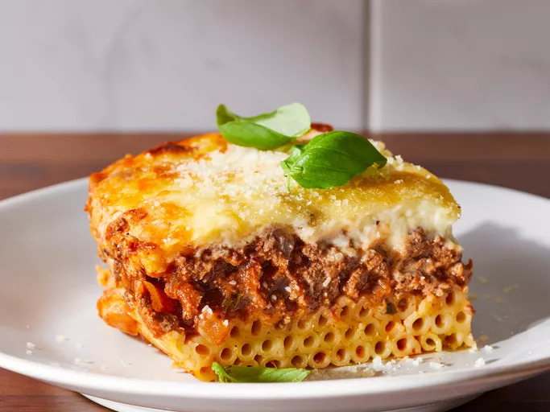
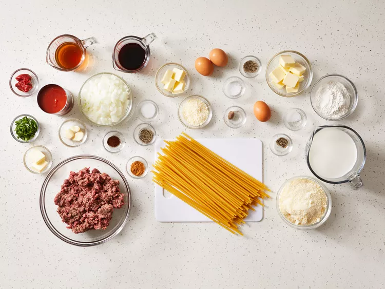
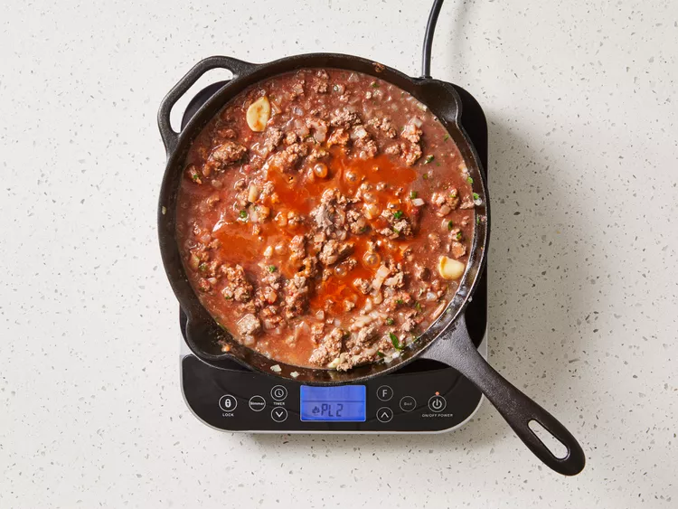
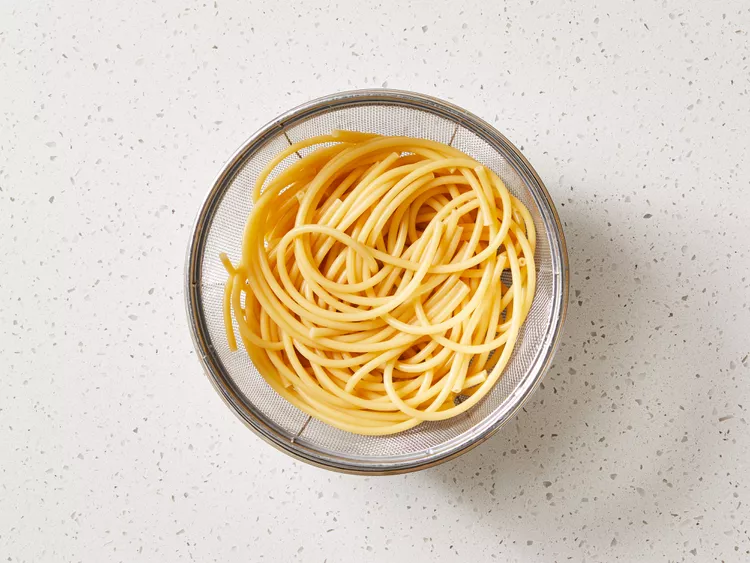
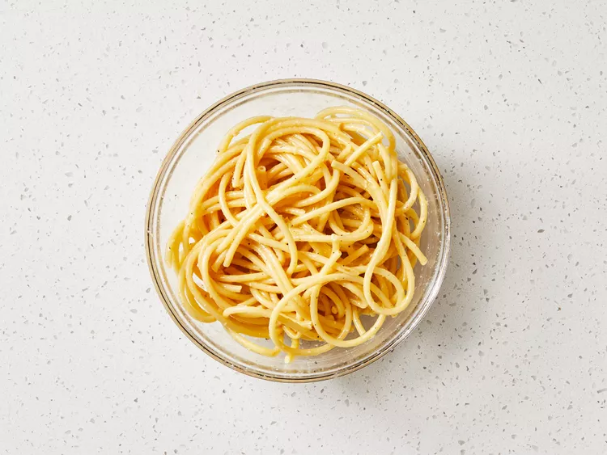
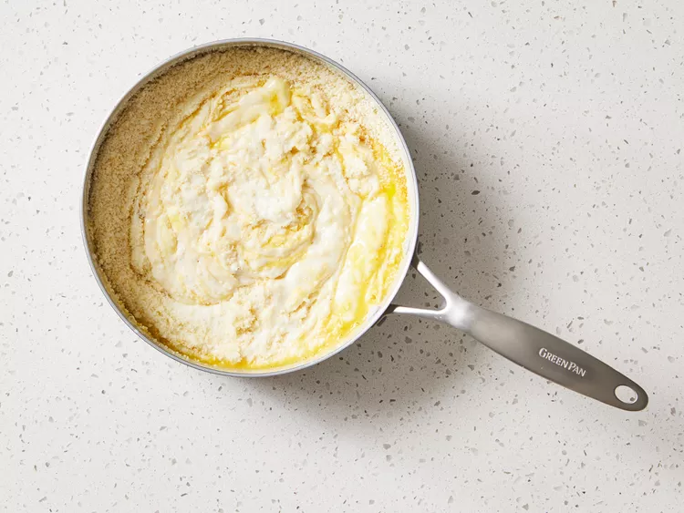
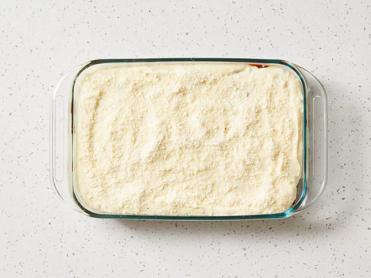
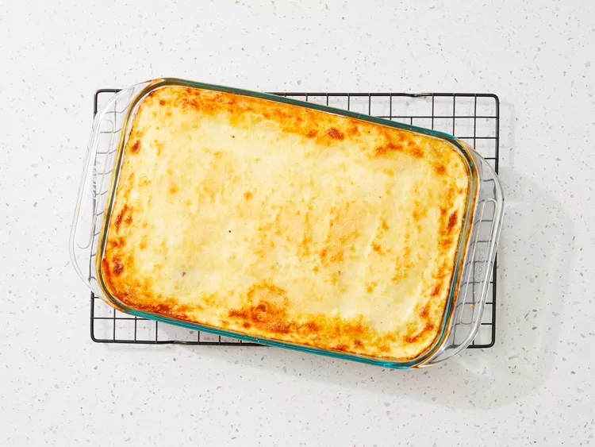
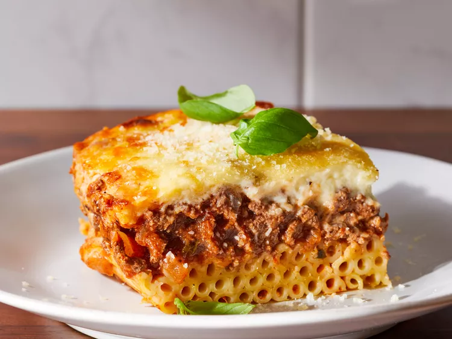

Pastitsio

What Is Pastitsio?
Pastitsio is a Greek pasta dish that’s assembled and then baked, similar to the Italian lasagna. It usually consists of pasta, a meat sauce, and a béchamel sauce. Variations of pastitsio can be found throughout the Mediterranean region.
How to Make Pastitsio
You’ll find the full, step-by-step recipe below — but here’s a brief overview of what you can expect when you make this homemade pastitsio:
- Make the meat sauce.
- Prepare the pasta.
- Make the cheese mixture
- Make the béchamel sauce, then stir half of the béchamel into the meat sauce.
- Assemble the pastitsio according to the detailed instructions in Step 7.
- Bake until bubbly and golden.Let stand,then cut into squares.
How to Store Pastitsio
Store your leftover pastitsio,tightly covered,in the refrigerator for up to four days.Reheat in the oven until heated through.
Can You Freeze Pastitsio?
Sure!You can freeze pastitsio for up to three months.Thaw in the refrigerator overnight,then reheat thoroughly in the oven.
Ingredients
Meat Sauce:
- 2 tablespoons butter
- 1 large onion,chopped
- 3 cloves garlic,crushed
- 1½ pounds lean ground beef
- 1 (15 ounce) can crushed tomatoes
- 1/2 cup dry red wine
- 1/2 cup beef broth
- 2 tablespoons tomato paste
- 2 tablespoons chopped fresh parsley
- 1/2 teaspoon ground cinnamon or 1 cinnamon stick
- 1 whole clove
- salt and pepper to taste
Pasta:
- 12 ounces bucatini or pastitsio pasta
- 4 tablespoons butter
- 1/4 cup grated Kefalotiri,Parmesan,or Pecorino cheese
- 1 dash ground nutmeg
- 1/4 teaspoon salt
- 1/4 teaspoon freshly ground black pepper
- 2 large eggs,lightly beaten
Béchamel Sauce:
- 1/2 cup butter
- 1/2 cup all-purpose flour
- 3 cups milk
- 1/4 teaspoon ground nutmeg
- 1/4 teaspoon salt
- 1/4 teaspoon ground black pepper
- 1 1/2 cups grated Kefalotiri,Parmesan,or Pecorino cheese,divided
- 1 large egg,lightly beaten
- 1 large egg yolk,lightly beaten
Directions
Step 1
Gather all ingredients. Preheat the oven to 350 degrees F (175 degrees C). Grease a 9x13-inch casserole dish.

Step 2
Make the meat sauce: Melt butter in a skillet over medium heat. Add onion and garlic; cook and stir gently until onion is soft, 3 to 5 minutes. Increase heat and add ground beef; cook and stir until browned and crumbly, about 5 minutes. Stir in tomatoes, wine, broth, tomato paste, parsley, cinnamon, salt, pepper, and clove. Cover and simmer over low heat for 20 minutes.

Step 3
Meanwhile prepare the pasta: Bring a large pot of lightly salted water to a boil. Add pasta and cook until tender yet firm to the bite, 8 to 10 minutes. Drain.

Step 4
Pour melted butter, 1/4 cup grated cheese, nutmeg, salt, and pepper over pasta; toss well and cool briefly. Add 2 eggs and toss again; set aside.

Step 5
Make the béchamel: Melt butter in a saucepan over medium-low heat. Add flour; cook and stir for 2 minutes. Pour in milk and bring to a boil, stirring constantly. Season with nutmeg, salt, and pepper. Cool slightly before stirring in 1 cup grated cheese, beaten egg, and egg yolk. Then stir 1/2 cup of béchamel sauce into meat sauce.

Step 6
To assemble pastitsio: Arrange pasta in the bottom of the prepared baking dish so that all of the noodles are nicely lined up and are as level as possible for a great visual effect when serving. Spoon meat sauce over pasta; top with remaining béchamel sauce, spreading evenly. Sprinkle remaining 1/2 cup grated cheese on top.

Step 7
Bake in the preheated oven until bubbling and golden brown on top,about 50 minutes.

Step 8
Let stand for 10 minutes before cutting into squares.

Enjoy! :D